UNITED ARAB EMIRATES
MINISTRY OF EDUCATION
THE FIRST ACADEMY – PRIVATE, AJMAN
الإمارات العربية المتحدة
وزارة التربية والتعليم
مدرسة الأكاديمية الأولى الخاصة - عجمان
UNITED ARAB EMIRATES
MINISTRY OF EDUCATION
THE FIRST ACADEMY – PRIVATE, AJMAN
الإمارات العربية المتحدة
وزارة التربية والتعليم
مدرسة الأكاديمية الأولى الخاصة - عجمان
Students will complete an Arduino project during ICT classes: first in Tinkercad (checkpoint), then for real – assembling real components and wiring them physically in class. Everything for your project is below.
Each project page has: purpose, parts, wiring diagram, tested code, build & test steps, AI prompts, problems, poster & video, and downloads.
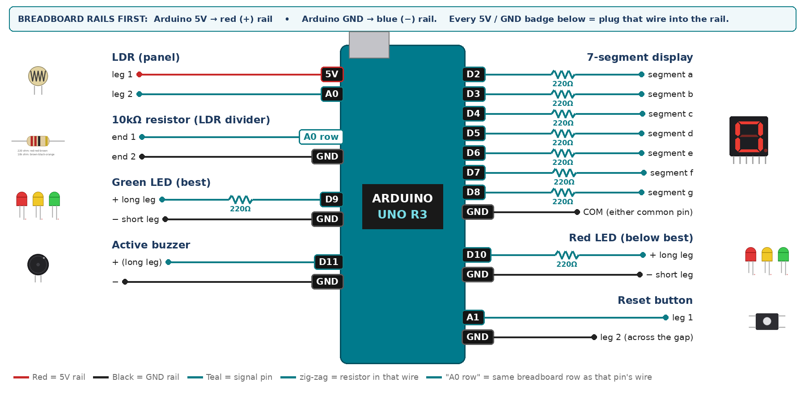
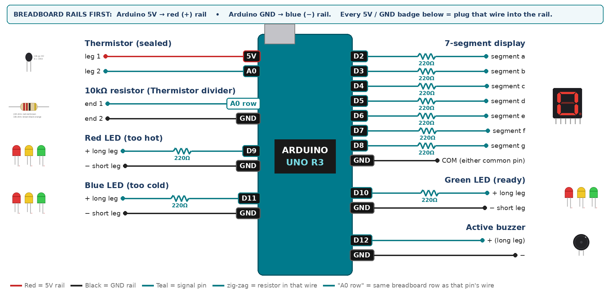
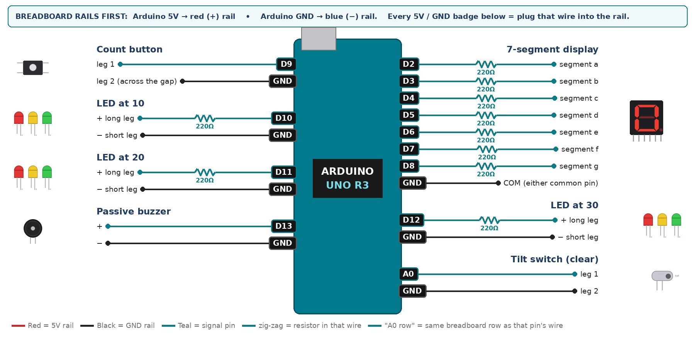
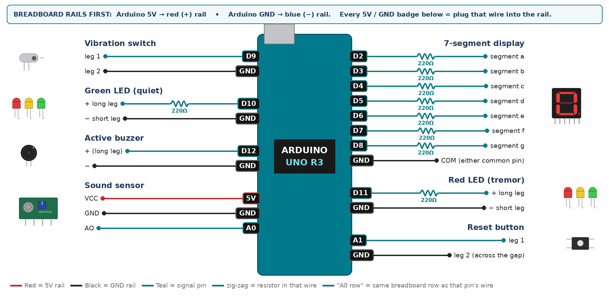
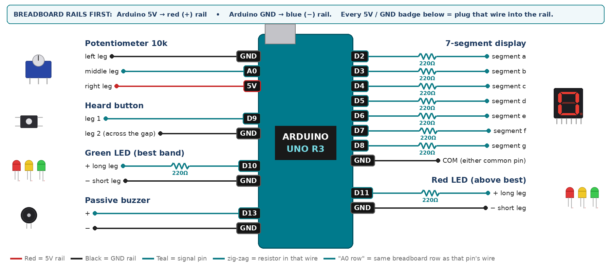
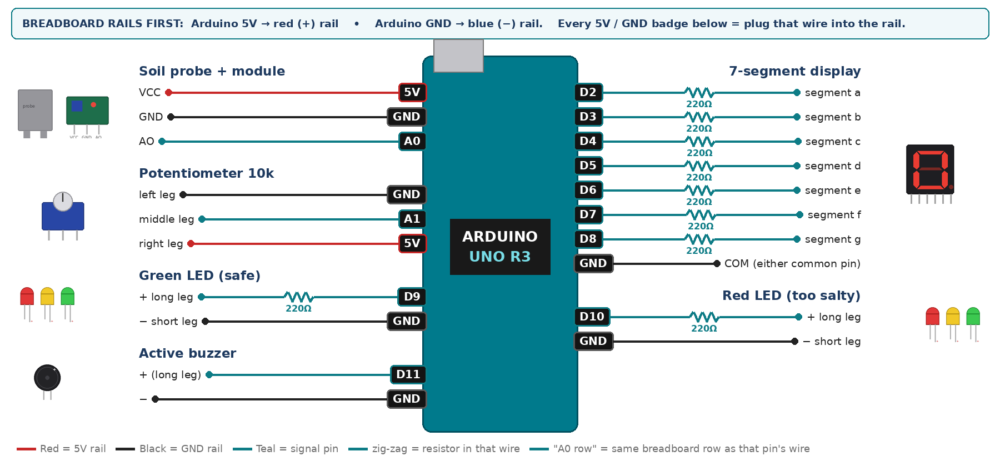

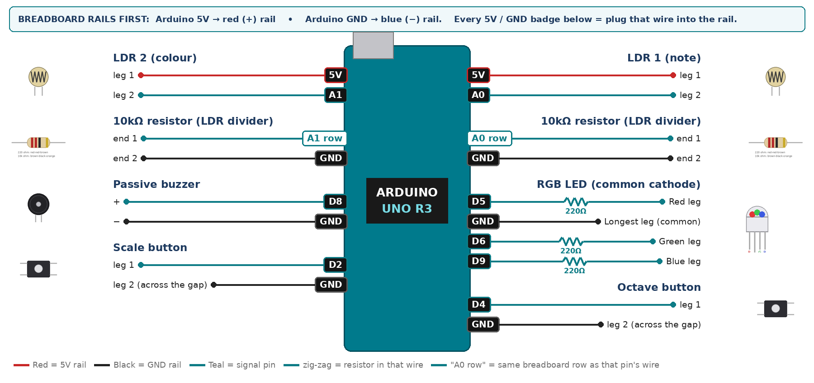
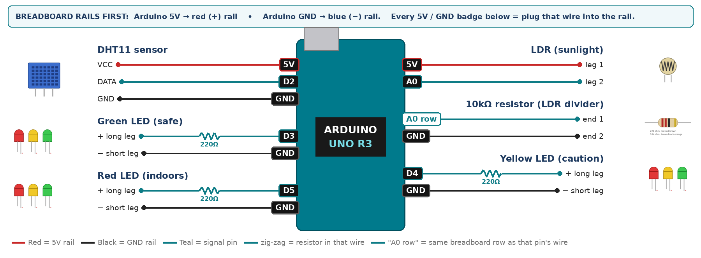

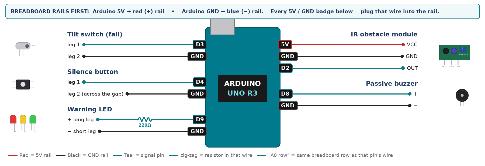
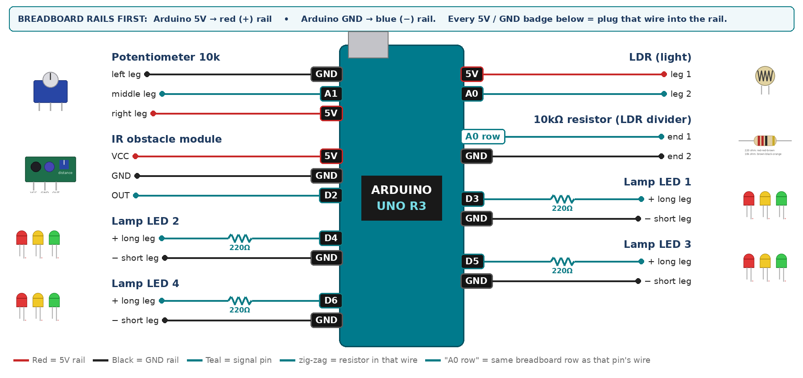
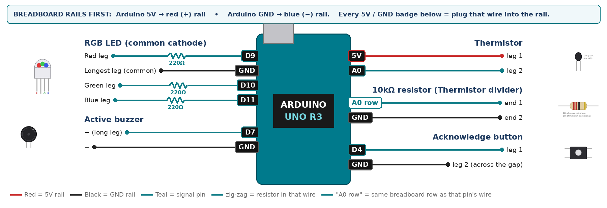

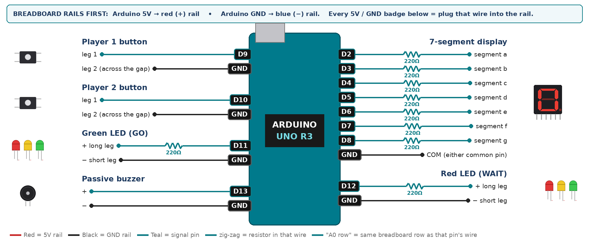
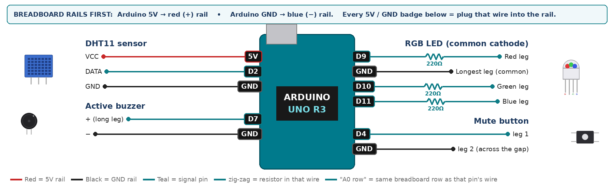
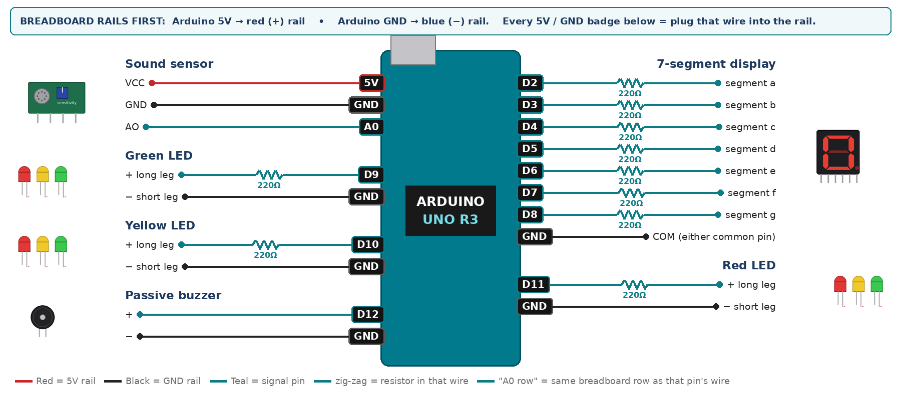
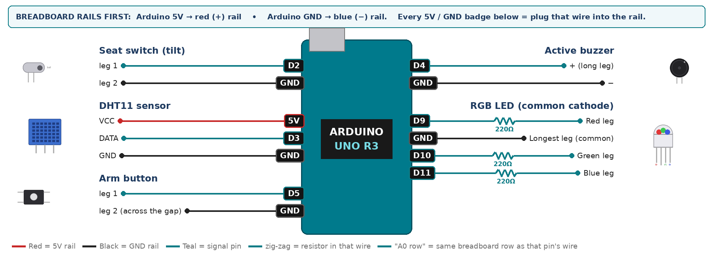
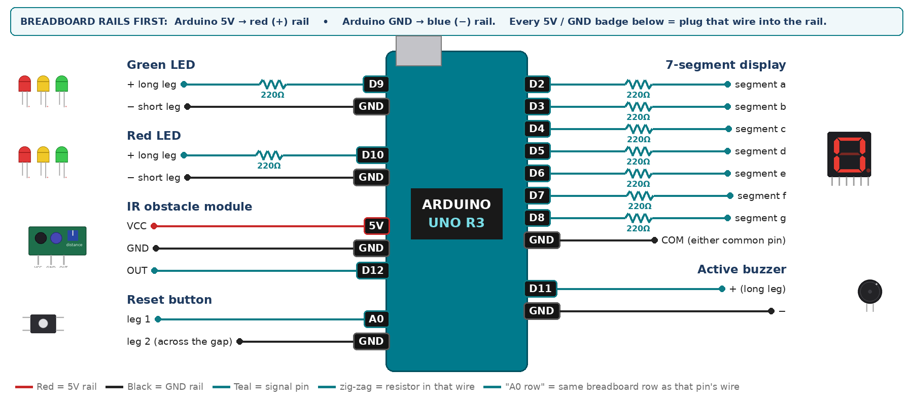
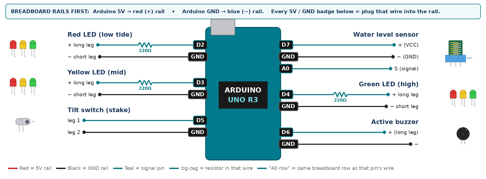
Your ticks are saved on this device only.
What each part does, how it connects, and a link to learn more.


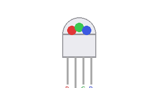


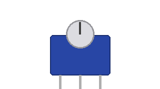


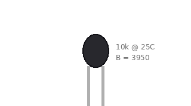


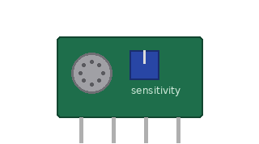
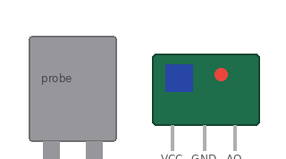
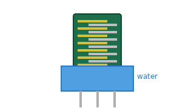

Copy, fill the [brackets], paste into ChatGPT / Claude / Gemini / Z.ai. Your project page has prompts written for YOUR project.
Check our Arduino wiring for mistakes before we power it. Parts: [list]. Wiring: [paste the wiring table from our project page]. Look for 5V/GND swapped, LEDs without 220Ω, wires in D0/D1.
Our Arduino UNO upload failed with this message: [paste the orange error text]. What does it mean and what should we check first?
Our [sensor name] shows [numbers from Serial Monitor] but we expected about [numbers]. It is wired: [wiring]. What could cause this and how do we test it?
Our [LED / buzzer / 7-segment] does nothing. It is on pin [D?] with [resistor]. The code line is: [paste line]. Give us 5 checks in order, simplest first.
In our Arduino project, the [buzzer/LED] should [new behaviour, e.g. beep only after 5 seconds]. Here is the part of the code: [paste]. Show only the lines we must change and explain why.
Tinkercad does not have a [part]. Which Tinkercad part can stand in for it, how do we wire it, and what small code change is needed?
Explain this Arduino line to a Grade 11 student in two sentences with an everyday example: [paste one line]
Turn our notes into a 60-second video script for our project: problem in the UAE, how it works, how AI helped us, our test results. Notes: [paste]
Tap a problem to see the fix. Your project page also lists the problems for your project.
Unplug at once – there is a short circuit. Look for a wire joining 5V and GND, or a module plugged in backwards.
Tools › Board › Arduino Uno, then Tools › Port – pick the COM port that appears when you plug in. Close the Serial Monitor. Try another USB cable or laptop port.
Something is plugged into D0 or D1 – move it. Press the reset button just before Upload.
Check the wires go to the SAME pin numbers as the const lines at the top of the code.
Long leg to the resistor/pin, short leg to GND. Test the LED with the Blink example on that pin.
Each LED needs its OWN 220Ω resistor – do not share one.
It is common ANODE: longest leg to 5V and set RGB_COMMON_ANODE = true.
Common ANODE display: COM to 5V and set SEG_COMMON_ANODE = true. Check COM is really connected.
One segment wire is in the wrong pin. Compare a→D2 … g→D8 with the pinout picture.
It must straddle the centre gap. Use two legs on OPPOSITE sides of the gap.
Contact bounce – the code’s justPressed() handles it. Make sure you didn’t delete it.
Swap the two outer legs (5V and GND).
Its resting position is closed. Turn it so it is OPEN when the device is normal.
Install “DHT sensor library” + “Adafruit Unified Sensor”. Check DATA pin. Add a 10k from DATA to 5V. Wait 2 s between reads.
The 10kΩ must go from the analog pin to GND, and the sensor from 5V to the same row.
The divider is reversed: thermistor to 5V, 10k to GND.
Change QUIET_PP / LOUD_PP using the numbers you see in the Serial Monitor.
Turn the blue screw back. Avoid sunlight. It does not see black or glass well.
Push the probe to the same depth every time; dry and clean it between cups.
tone() needs the PASSIVE buzzer. The active one just beeps on HIGH.
Check the condition in the code and that the buzzer + is on the right pin.
tone() uses the timer of pins 3 and 11 – use 5, 6 or 9 for PWM.
Set the speed to 9600 baud (bottom-right of the Serial Monitor).
Print numbers only, separated by commas – no words.
Use the substitute on your sheet (e.g. TMP36 for DHT11, button for IR module).
Tinkercad has no DHT library – use the T1 snippet from your sheet in Tinkercad only.
| Criterion | What you must do | For your project | Marks |
|---|---|---|---|
| 🖼️ Support | Choose an idea and create a clear project poster. | Clear poster of your project. | 4 |
| 🤖 Core | Use an AI tool and document the required prompts, examples, or data. | Use an AI tool; save your prompts + sensor readings. | 4 |
| 🧪 Advanced | Build, test, and improve the project using evidence. | Real build, readings, one improvement. | 4 |
| 🎥 Video | Explain the AI process and results in a short video. | Problem, wiring, AI help, demo, results. | 4 |
| ⏰ On time | Submit the complete project on time. | Everything in by Friday 30 October. | 4 |
| Total | 20 |